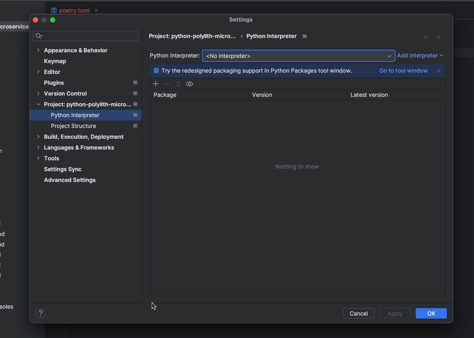

Configuring your Python IDE
MyPy
Add this configuration if you use MyPy for static analysis. With this configuration,
namespace packages will be enabled and top-level packages will be based in the mypy_path option.
Pyright
Pyright users can add this setting to make the tool aware of the components and bases folders.
.vscode/settings.json
pyproject.toml
.venv
It is recommended to create the virtual environment locally, for a great code editor experience.
By default, both Poetry and Hatch will create a venv outside of the repo.
You can override that behaviour by adding a configuration.
Poetry
Add this in a poetry.toml file:
Hatch
PyCharm
Make sure that you have a local virtual environment configuration (see above).
Run poetry install or hatch env create in a shell.
This will install the dependencies, and make the environment aware of the bases and components folders.
PyCharm will ask about what interpreter to use when opening a Python file. Make sure to choose the local one in the .venv folder.
Everything should now be set up correctly for PyCharm!

Breaking nuance: references corrections
In PyCharm, if you try to move a file from, say, one of the bases to one of the components, the IDE will show you a confirmation dialog with Search for references checkbox, which may or may not be checked by default.
It's better to uncheck it.
This is because, if the name of your file is generic (i.e. files with the same name can be encountered in other places in this repo), PyCharm would look for reference to it and get confused, and may decide that there is an error that should be fixed. It would then create a __init__.py file in the core of either components/{namespace} or bases/{namespace} directory, and this would lead to incorrectly interpreting the project structure.
In practice, this means that either components won't work, or bases, or both. This can be spotted by looking at the component-level (or base-level) __init__.py files, where the imports would be marked as faulty.
This issue can be fixed by one of the following:
- remove the automatically created
__init__.py; - re-create your virtual environment;
- revert your git repository to the commit before moving the file.
These methods are listed in the order they should be attempted - if one works, no need to do the others. The first one should work for most cases.